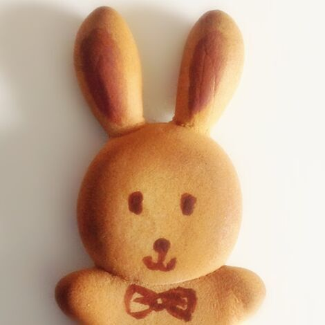

This is my rabbit... well I don't have her pictures on this computer, so you guys could imagine her look lol
I got so deeply loved with rabbits after I had her. This is a biscuit rabbit I made out of clay.
I really miss her since my mom took her away without letting me know. I don't even know if she's still living or how long did she lived.
It brings my sad memories back!